Photos used on this site
All photos come from Wikimedia Commons and are used under the license named beside each one. Some are resized or cropped. Captions on area pages describe the house type, not the photo's location, unless they say otherwise.
 Rosedale Gardens Historic District, Livonia, Michigan. Andrew Jameson, CC BY-SA 3.0.
Rosedale Gardens Historic District, Livonia, Michigan. Andrew Jameson, CC BY-SA 3.0.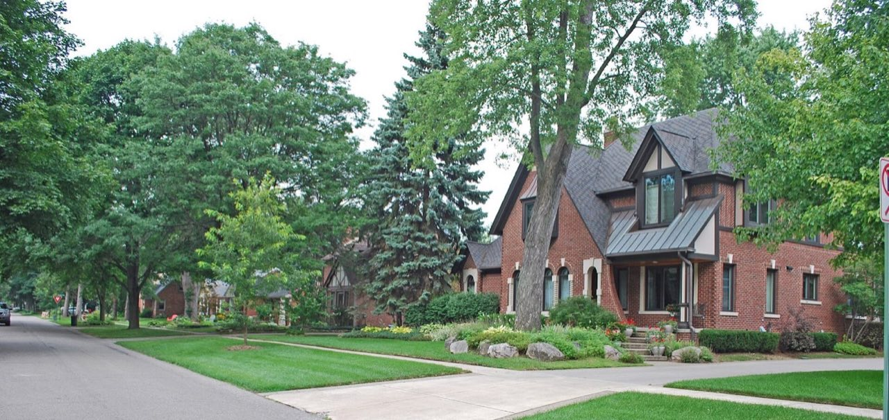
Rosedale Gardens Historic District, Livonia, Michigan. Andrew Jameson, CC BY-SA 3.0.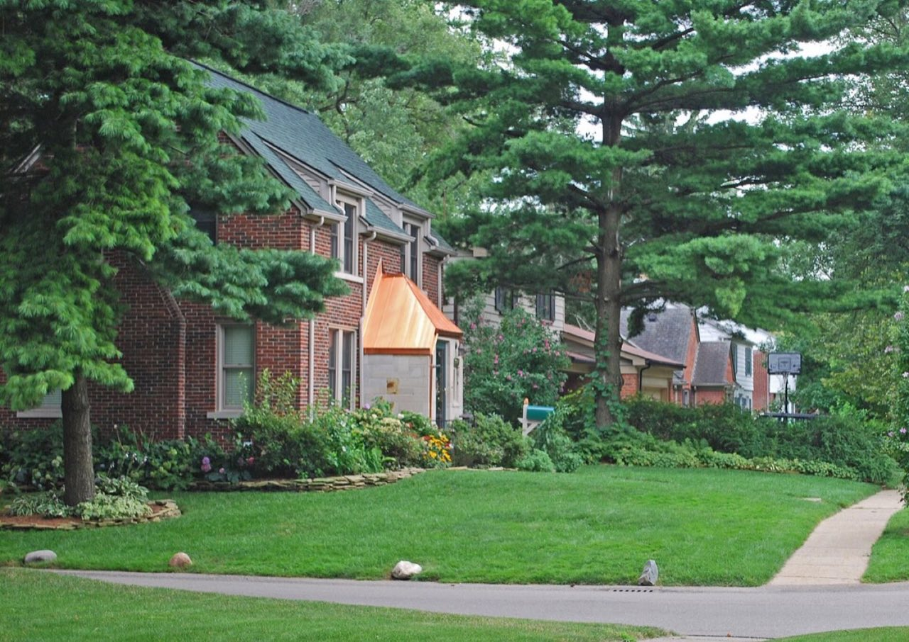
Rosedale Gardens Historic District, Livonia, Michigan. Andrew Jameson, CC BY-SA 3.0. Lake Drive ranches, Bailey Lakes, Ohio. Nyttend, Public domain.
Lake Drive ranches, Bailey Lakes, Ohio. Nyttend, Public domain.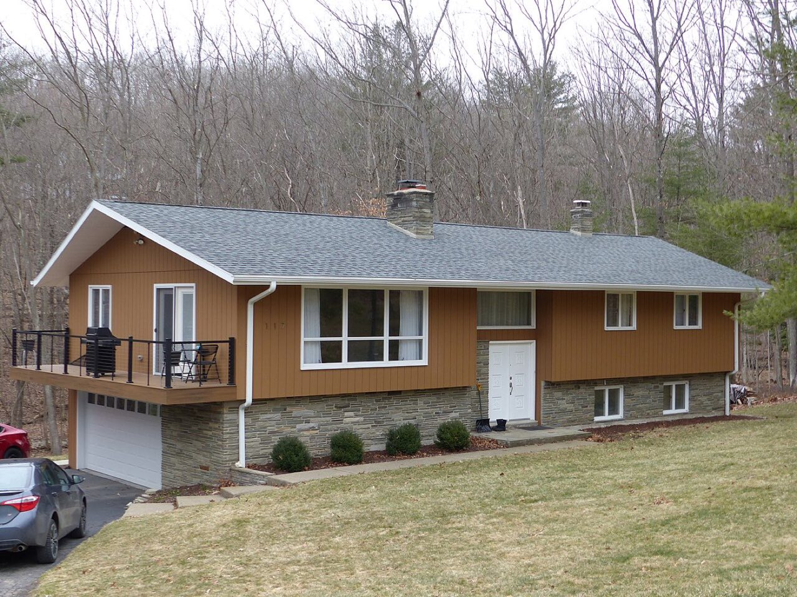
Split-level houses in Gang Mills, New York. Stilfehler, CC BY-SA 4.0. 169 Kedzie St, East Lansing, Michigan, built 1947. Tim Kiser, CC BY-SA 4.0.
169 Kedzie St, East Lansing, Michigan, built 1947. Tim Kiser, CC BY-SA 4.0. House in East Lansing, Michigan, built 1937. Tim Kiser, CC BY-SA 4.0.
House in East Lansing, Michigan, built 1937. Tim Kiser, CC BY-SA 4.0.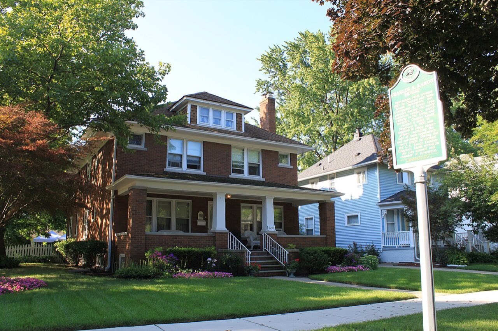
Charles A. Kandt House, Dearborn, Michigan. Dwight Burdette, Public domain.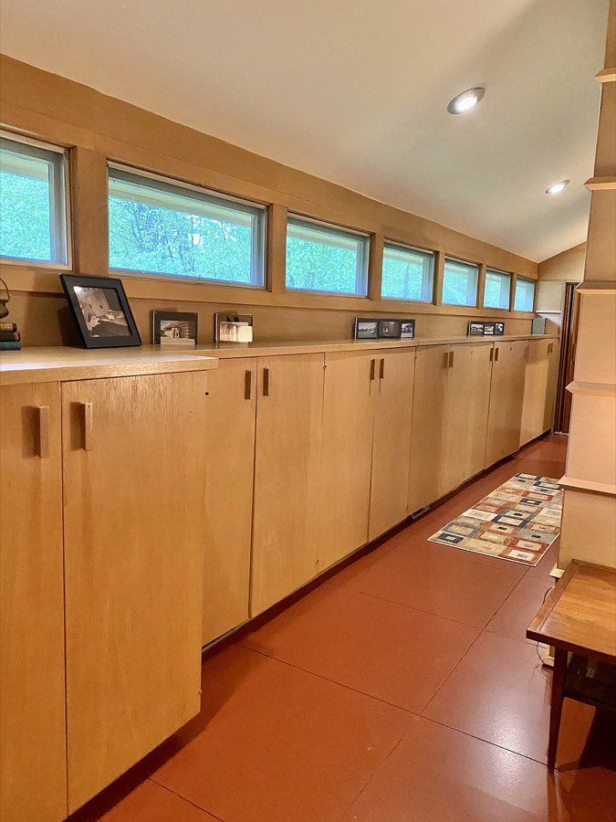
Interior, Duncan House, Polymath Park, Acme, Pennsylvania. w_lemay, CC BY-SA 2.0. Coolidge Street house, Old Jefferson, Louisiana. Infrogmation of New Orleans, CC BY-SA 4.0.
Coolidge Street house, Old Jefferson, Louisiana. Infrogmation of New Orleans, CC BY-SA 4.0. Coolidge Street house, Old Jefferson, Louisiana. Infrogmation of New Orleans, CC BY-SA 4.0.
Coolidge Street house, Old Jefferson, Louisiana. Infrogmation of New Orleans, CC BY-SA 4.0. Wood flooring made of hickory wood. Loadmaster (David R. Tribble), CC BY-SA 3.0.
Wood flooring made of hickory wood. Loadmaster (David R. Tribble), CC BY-SA 3.0.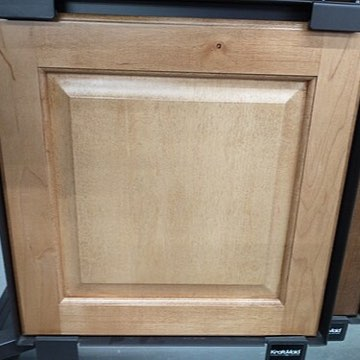
Cabinet door, raised panel (sample 4). Stilfehler, CC BY-SA 4.0.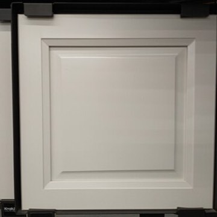
Cabinet door, raised panel (sample 8). Stilfehler, CC BY-SA 4.0. Cabinet door, shaker (sample 4). Stilfehler, CC BY-SA 4.0.
Cabinet door, shaker (sample 4). Stilfehler, CC BY-SA 4.0.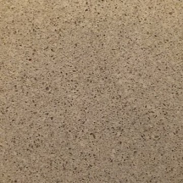
Laminate kitchen countertop, beige. Kurtkaiser, CC0.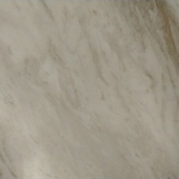
Formica laminate for countertops (sample 02). Stilfehler, CC BY-SA 4.0. Quartz (engineered stone) for countertops (sample 01). Stilfehler, CC BY-SA 4.0.
Quartz (engineered stone) for countertops (sample 01). Stilfehler, CC BY-SA 4.0.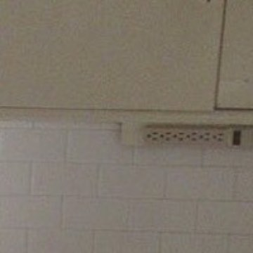
Detail of the Coolidge Street house kitchen, Old Jefferson, Louisiana. Infrogmation of New Orleans, CC BY-SA 4.0.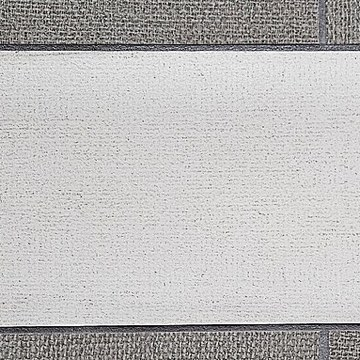
Ceramic tile, white rectangle. Eric Polk, CC BY-SA 4.0.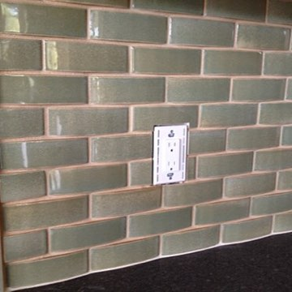
Kitchen backsplash tile. Capdevielle, CC BY-SA 3.0.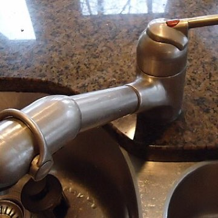
Franke faucet FF 380, kitchen sink. Tomwsulcer, CC0.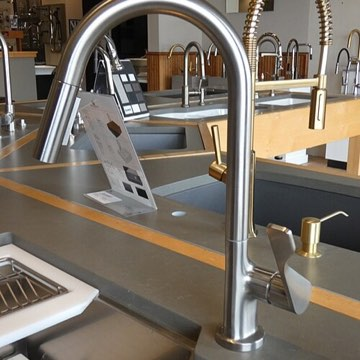
Kitchen faucet (sample 1). Stilfehler, CC0. Black faucet at a bathroom sink. Shixart1985, CC BY 2.0.
Black faucet at a bathroom sink. Shixart1985, CC BY 2.0.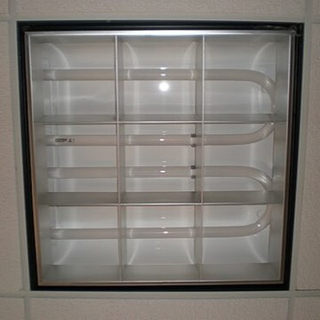
Recessed fluorescent ceiling light with guard. BrokenSphere, CC BY-SA 3.0.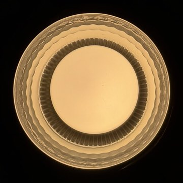
A ceiling lamp. Slyronit, CC BY-SA 4.0.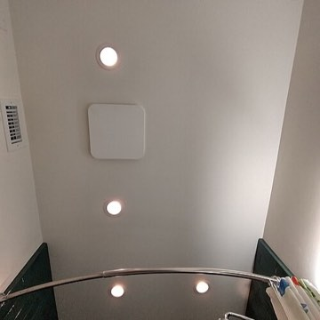
Bathroom ceiling after remodel. Stilfehler, CC BY-SA 4.0.Before launch, these are replaced with Sam's own photography or licensed images.